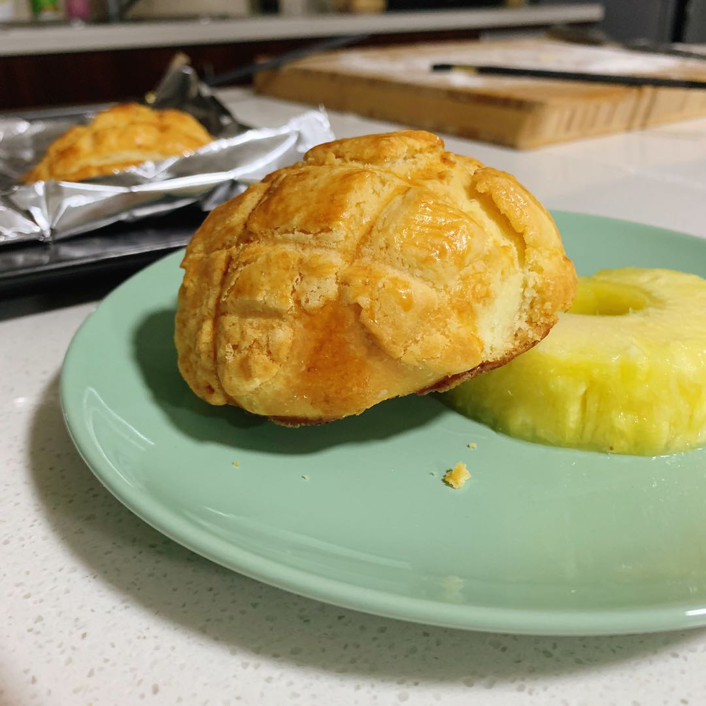

- flour 200g (all purpose or bread flour)
- salt 2g
- sugar 35g
- egg 20g
- water 110g
- yeast 3g
- unsalted butter 25g
- softened unsalted butter 40g
- sugar 40g
- egg 15g
- flour 65g (all purpose or cake flour)
Ingredients
Dough
Cookie Crust
- Mix up all ingredients except for butter and knead until smooth.
- Add in butter and knead. The dough should preferably pass the windowpane test.
- Once the dough is nice and smooth, cover and let rise for an hour. We are gonna make the cookie crust in the meanwhile.
- Mix up all the ingredients for the cookie crust in order of the list. Wrap in a plastic wrap and chill in fridge. (not freeze)
- Once the dough is doubled, divide equally to 6 small buns.
- Devide the cookie crust into 6 balls, then flaten them into circles.
- Cover each bun with a cookie crust.
- Use a knife to mark straight lines on the cookie crust to create the "pineapple" effect.
- Cover the pineapple buns and let rest for 30 minutes.
- Preheat oven to 180℃.
- Once the buns are rested and risen, brush on some eggwash and bake at 180℃ for 15 to 18 minutes or until golden brown.
- Serve with pineapples. Wink Wink.
Process

Things to read before you start making this recipe
Remember to rest the buns at a cool temperature before baking since butter WILL melt at 305K.